第 2 轮你指出：占画面的是编辑器顶部“文件没有保存”那条横幅整行，不是详情块；还说带详情的通知里“重试”单独占一列不好。这一轮按这两点重画：编辑器失败改发通知、详情用对话框打开、动作挪到正文下一行。图都是 Component Lab 的静态稿，亮色。
动作行是正文下面单独一行，“重试”“详情”并排，关闭键留在右上角；正文宽度不再随有没有动作变化，代价是每条带动作的通知高约 30px。
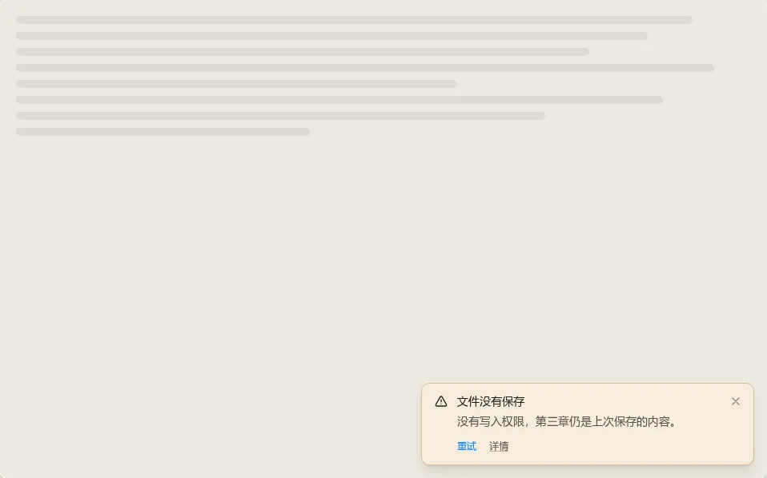
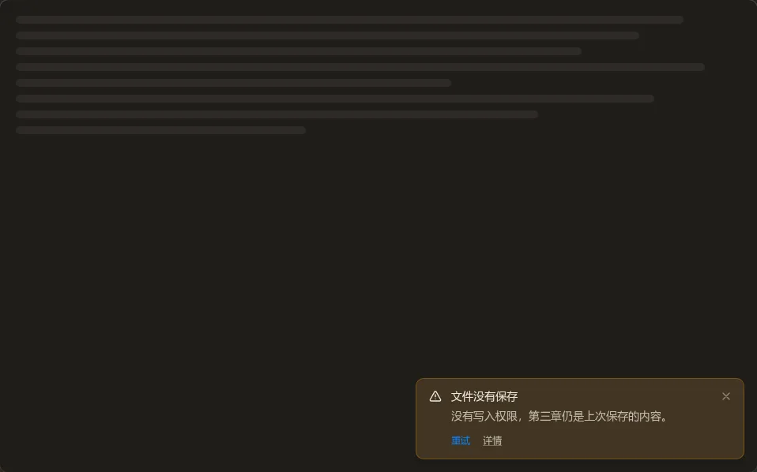
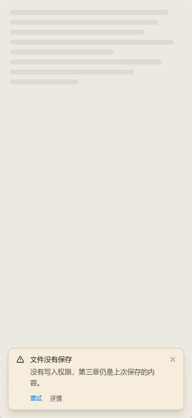
读完正文目光直接落到动作；对齐稳，不依赖负外边距。
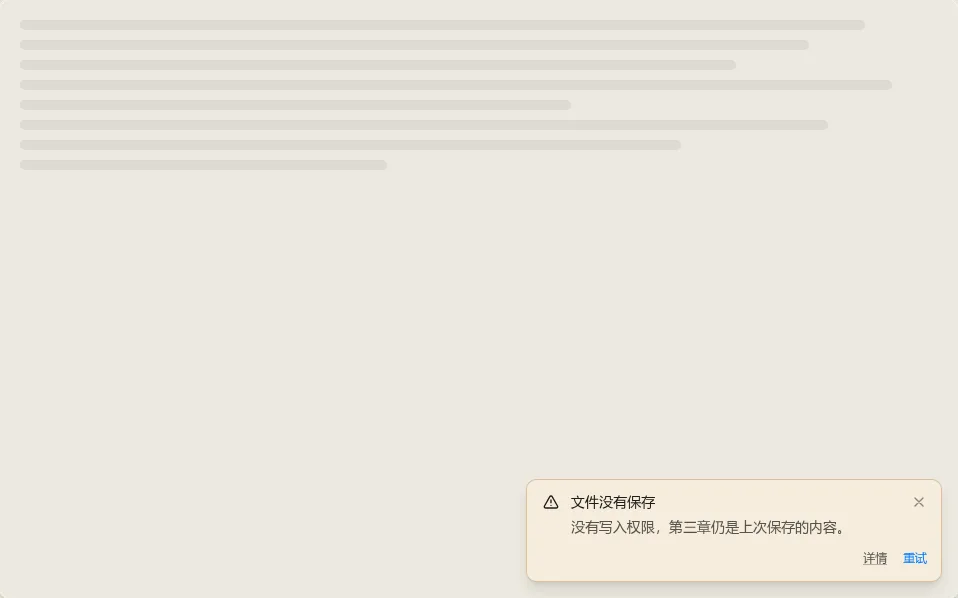
主动作在最右，符合一些平台的习惯；但离正文最远，对到关闭键下方要靠负外边距，容易差几个像素。
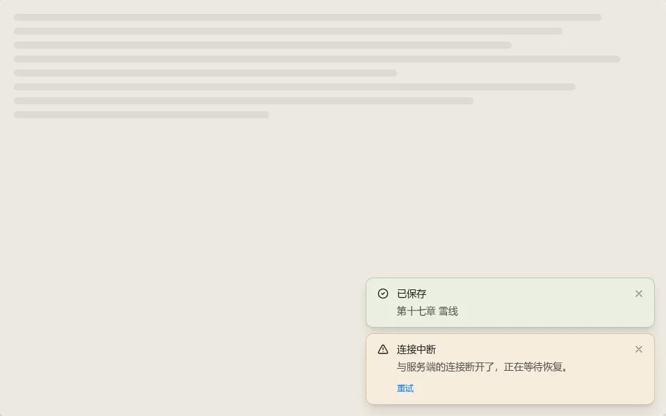
推荐 A。动作按钮的颜色我会跟随通知色调（沿用现在 actionLabel 的做法）；稿里用的主题蓝叠在琥珀色底上偏跳，不采用。
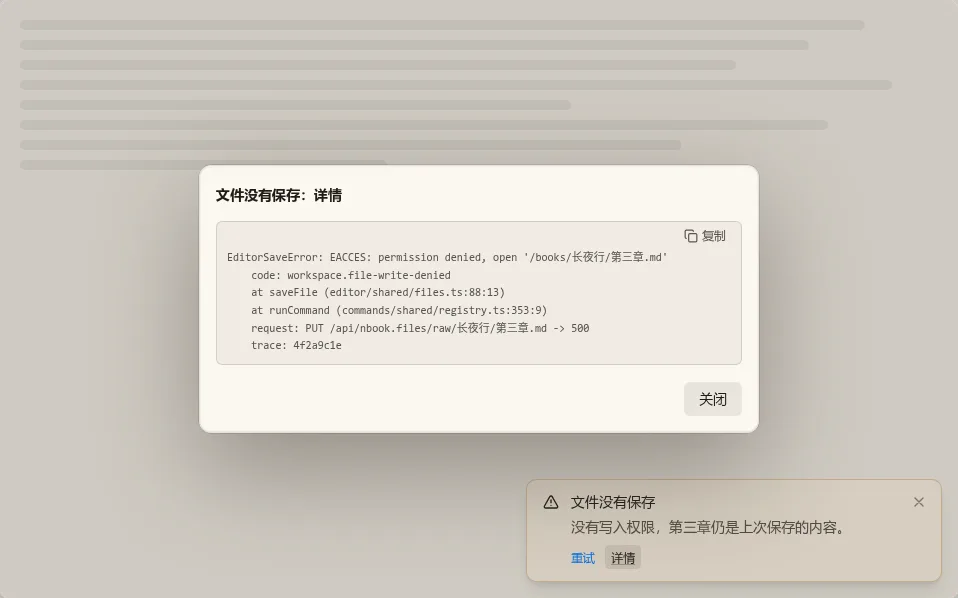
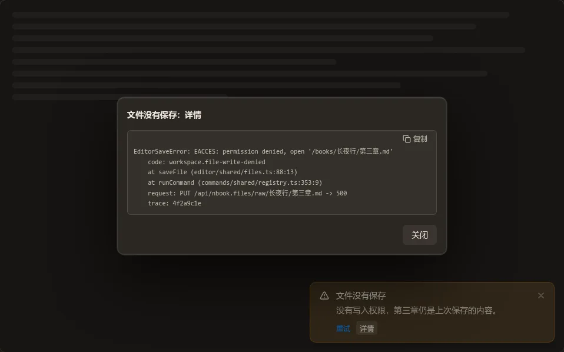
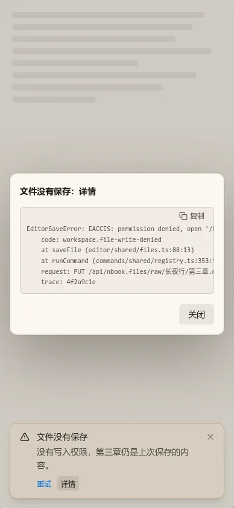
全应用只有一种“详情”：通知、状态栏都点开同一个对话框。不再需要给 Notification 加整行宽的 footer 插槽，也不用处理“展开把堆叠推高”。代价：要多关一步；对话框是模态，通知里的“重试”要先关掉对话框才能点。
不用关对话框就能边看边点“重试”；但展开一条会把整个堆叠推高，通知一多就占屏。
推荐 A。
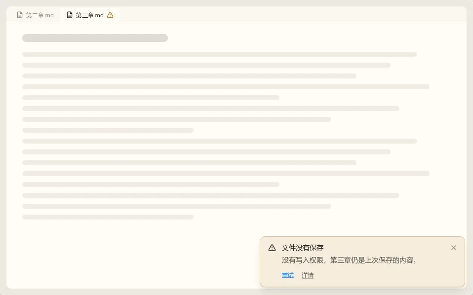
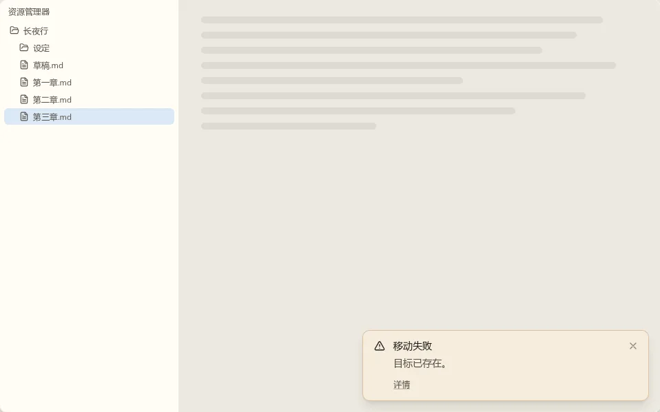
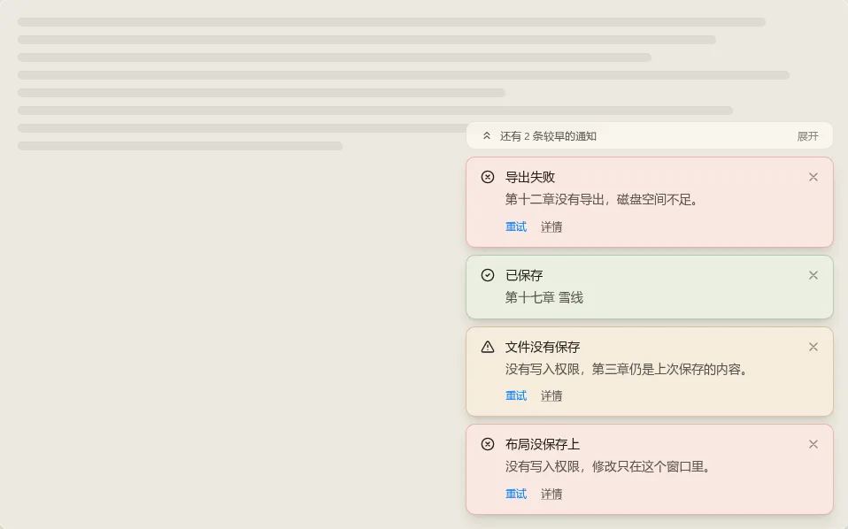
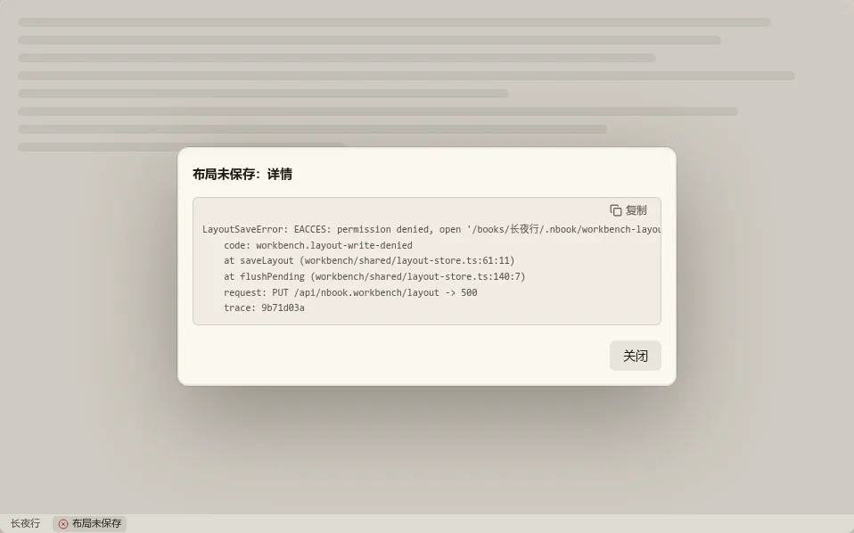
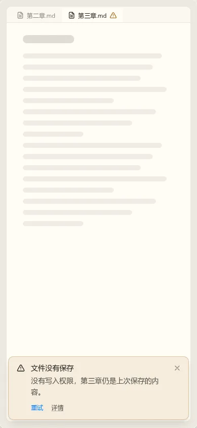
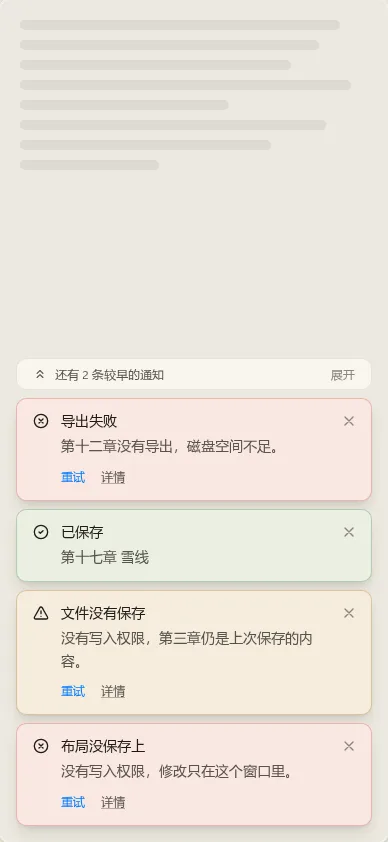
说明：
推荐确认。
detail?: string，开发诊断原文，不翻译）；复制三态：待复制、已复制、剪贴板不可用时全选原文并提示“已选中，按 Ctrl+C 复制”。NotificationItem 加 detail、NotificationStack 加上限与折叠小条、Notification 加动作行槽并改成网格布局、Button 视需要加最小档、Dialog 的初始焦点放在面板上。